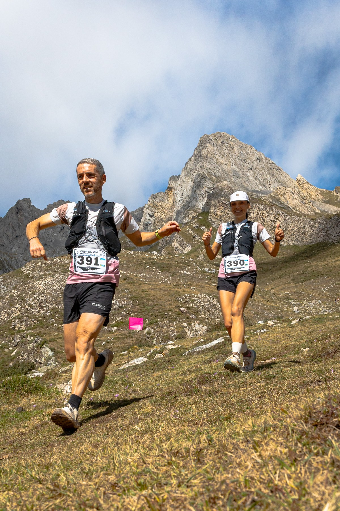
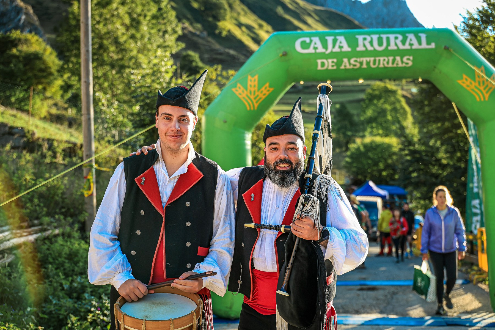

Raúl Cámara Pérez and Claudia Gutiérrez Lueje won the 21 km Trail Macizu d’Ubiña on Saturday, 29 August, as Tuiza de Arriba hosted the twelfth edition of one of Asturias’ most demanding mountain races.
The official classification records Cámara, representing Mizuno Solorunners, first in 2:43:16. Ander Cangas Morillas followed in 2:47:28, with José Luis Camblor Sánchez third in 2:49:07.

Gutiérrez leads the women’s race
Gutiérrez, of Club Avientu Sol, finished in 3:29:38 to lead the women’s classification. Sonia Regueiro Rodríguez was second in 3:31:34 and Noelia Ortiz Campa completed the women’s podium in 3:36:00.
The main route covered 21 km and approximately 2,000 metres of positive elevation, starting and finishing in Tuiza de Arriba. The course climbed through technical high-mountain terrain in the Macizo de Ubiña, reaching more than 2,100 metres above sea level.

García and Suárez win La Carrerina
The 15 km Carrerina, with approximately 1,200 metres of positive elevation, was won by Andrés García Blanco in 1:56:50. Pau Pierres Gay finished second and Adrián Gavilán Sánchez third. Adriana Suárez López led the women in 2:31:26, ahead of Melania Cillero García and Sonia Álvarez Rebaque.
The official classifications list 219 finishers in the main trail and 54 in La Carrerina. The official event record confirms the date, Tuiza de Arriba venue, two race distances and organiser G.M. Llena Penaska.
Image Media coverage
Reporting: IM News Editorial Desk
Event photographers: Adília Pinto, Claudio João, Diego Ferreira and Eduardo Almeida / Image Media
Photographs in this report: Adília Pinto, Claudio João and Diego Ferreira / Image Media
Results checked against the official Empa-t classifications.